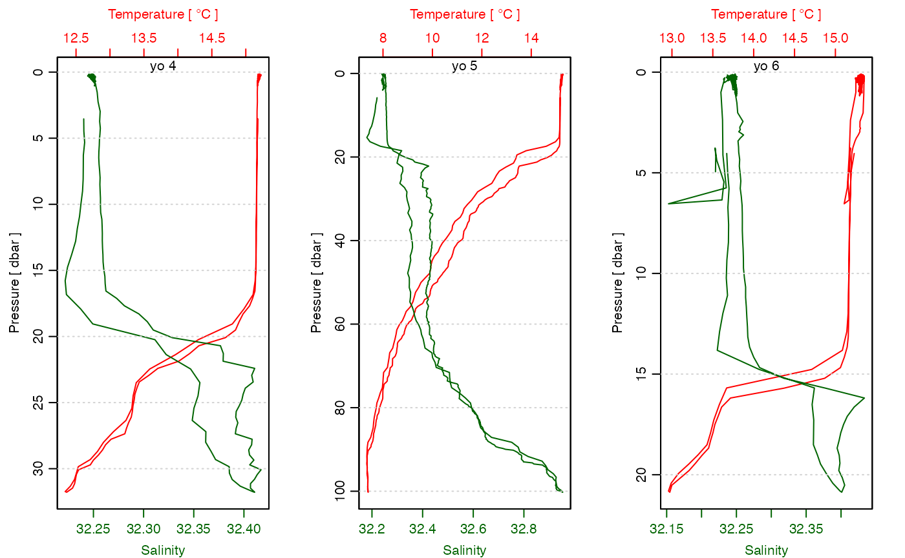
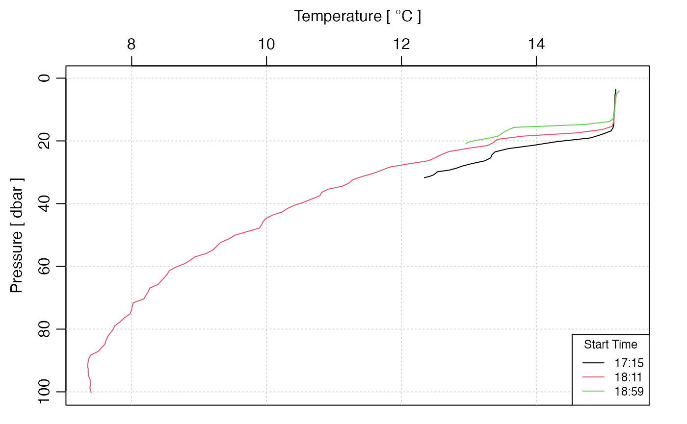
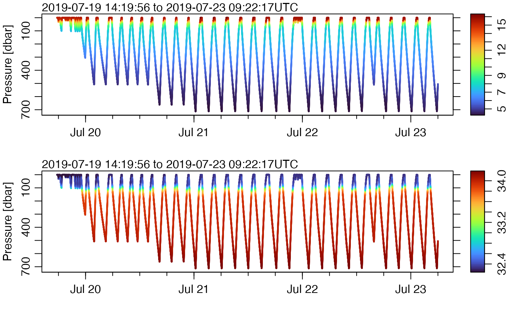

Handling SeaExplorer Glider Data
Dan Kelley (https://orcid.org/0000-0001-7808-5911)
2025-02-10
Source:vignettes/sea_explorer.Rmd
sea_explorer.RmdAbstract. This vignette explains the basics of working with data from SeaExplorer gliders.
Create Temporary Directory for CRAN Submission
For this vignette to be suitable for CRAN submission, it must not download files to the user’s working space. We avoid that by setting aside space in the next two lines of code. This space is removed at the end of the vignette. Obviously for practical work it would make sense to store these things in a more permanent directory, to avoid the need for new downloads every time work is to be done with the data.
Analysis
Raw Files
The below shows how to download a small number of files (just 5) from
the CPROOF server at Reference 1. The code worked as of 2024-08-29, but
if reader finds that the server has changed, the solution is to alter
the value of urlbase in line 2 below.
n <- 6 # number of files to download
urlRaw <- paste0(
"https://cproof.uvic.ca/gliderdata/deployments/",
"dfo-eva035/dfo-eva035-20190718/",
"delayed_raw/"
)
subsRemote <- paste0("sea035.12.gli.sub.", 1:n)
rawsRemote <- paste0("sea035.12.pld1.raw.", 1:n)
subs <- file.path(tmpdir, subsRemote)
raws <- file.path(tmpdir, rawsRemote)
for (i in 1:n) {
if (!file.exists(subs[i])) {
# download.file(paste0(urlRaw, subsRemote[i]), subs[i])
curl::curl_download(
url = paste0(urlRaw, subsRemote[i]),
destfile = subs[i], mode = "wb"
)
}
if (!file.exists(raws[i])) {
# download.file(paste0(urlRaw, rawsRemote[i]), raws[i])
curl::curl_download(
url = paste0(urlRaw, rawsRemote[i]),
destfile = raws[i], mode = "wb"
)
}
}Note that the above is based on the assumption that the server holds
the sub and pld1 files in the same directory.
If your server holds them in separate directories, it should be a simple
matter to alter the lines defining subs and
raws in the above.
The following produces a plot that summarizes key hydrographic properties, in a format that is quite useful for an initial look at the data.
library(oce)
#> Loading required package: gsw
library(oceglider)
#> Loading required package: ncdf4
g <- read.glider.seaexplorer.delayed(tmpdir)
layout(matrix(c(2, 1, 3, 1, 4, 1), byrow = TRUE, nrow = 3), widths = c(0.6, 0.4))
plot(g, which = "TS")
plot(g, which = "p", type = "p", cex = 0.3)
plot(g, which = "T", type = "p", cex = 0.3)
plot(g, which = "S", type = "p", cex = 0.3)Figure 1. An overview of the raw data. Note the spurious values in the time-series plots for the first hour or two.
Inspection reveals spurious (non-oceanographic) signals for the first
hour or two, with low pressures, high temperatures and very low
salinities. Reasoning that these spurious data resulted from the
instrument having been set to record a few hours before deployment, an
analyst might choose to discard those data. This can be done with the
subset() function, e.g. as follows, where 2.5 hours was
chosen as the cutoff after some experimentation.
g2 <- subset(g, time > g[["time"]][1] + 2.5 * 3600)
layout(matrix(c(2, 1, 3, 1, 4, 1), byrow = TRUE, nrow = 3), widths = c(0.6, 0.4))
plot(g2, which = "TS")
plot(g2, which = "p", type = "p", cex = 0.3)
plot(g2, which = "T", type = "p", cex = 0.3)
plot(g2, which = "S", type = "p", cex = 0.3)Figure 2. Raw data, after trimming spurious data in the 1.5 hours following power-on events.
The spurious data are now gone, so that this new g2
version certainly looks more like oceanographic data collected with a
glider. Note how pressure increases as the glider descends and then
decreases as it ascends. Temperature decreases with depth, and salinity
increases.
SeaExplorer gliders store a record of navState, which is
stored as a numerical code, as follows.
- 105 means the glider is not navigating yet;
- 115 means the glider is surfacing in preparation for communication;
- 116 means the glider is at the surface, acquiring a GPS signal, and is communicating;
- 110 means the glider is inflecting downward;
- 100 means the glider has ballast set to be descending;
- 118 means the glider has ballast adjusted to reduce density, so will be inflecting upward;
- 117 means the glider has ballast set to be ascending.
There is a way to see the transition from one state to another, as follows.
Another useful operation is to look at individual yos, which can be done as follows, for the first three of the remaining yos.
payload <- g2[["payload"]]
s <- split(payload, payload$yoNumber)
par(mfrow = c(1, 3))
for (i in 1:3) {
ss <- s[[i]]
ctd <- oce::as.ctd(
salinity = ss$salinity,
temperature = ss$temperature,
pressure = ss$pressure,
longitude = ss$longitude,
latitude = ss$latitude
)
oce::plotProfile(ctd, xtype = "salinity+temperature", eos = "unesco")
mtext(sprintf("yo %d", ss$yoNumber[1]), line = -1, cex = par("cex"))
}
Note that the plots show both the downcast and the upcast portions of the yo.
Waterfall plots are also useful, and they are easily constructed, with lower-level oce code.
par(mfrow = c(1, 1))
# use limits based on all yos, to avoid clipping
Tlim <- range(sapply(s, \(ss) range(ss[["temperature"]], na.rm = TRUE)))
plim <- rev(range(sapply(s, \(ss) range(ss[["pressure"]], na.rm = TRUE))))
for (i in seq_along(s)) {
ss <- s[[i]]
ctd <- oce::as.ctd(
salinity = ss$salinity,
temperature = ss$temperature,
pressure = ss$pressure,
longitude = ss$longitude,
latitude = ss$latitude
)
ctd <- oce::ctdTrim(ctd, "upcast")
if (i == 1) {
oce::plotProfile(ctd,
xtype = "temperature", eos = "unesco",
Tlim = Tlim, plim = plim
)
} else {
lines(ctd[["temperature"]], ctd[["pressure"]], col = i)
}
}
legend("bottomright",
title = "Start Time",
lwd = 1, col = seq_along(s), cex = 0.75, bg = "white",
legend = sapply(s, function(ss) format(ss$time[[1]], "%H:%S"))
)
Binary (NetCDF) Files
NetCDF files are likely the format that most users will be dealing with, partly because it can be loaded quickly, and it is simple to read. The sample file, from Reference 2, corresponds to the full dataset used in the previous discussion of raw data.
Note that the following code creates a temporary directory into which
downloaded material is saved. This cleanup is required for submission on
CRAN machines but would not normally be a part of typical workflow.
Indeed, it would be common to only download the files if they were not
present locally, as indicated by a call to
file.exist().
urlNC <- paste0(
"https://cproof.uvic.ca/gliderdata/deployments/",
"dfo-eva035/dfo-eva035-20190718/",
"/L0-timeseries/dfo-eva035-20190718_delayed.nc"
)
curl::curl_download(url = urlNC, destfile = fileNC, mode = "wb")
G <- read.glider.netcdf(fileNC)As was done for the raw data, we ought to drop the data before a certain time.
G2 <- subset(G, time > G[["time"]][1] + 2.5 * 3600)Typically, the next step will be to see the trajectory in time-depth space, as follows.
plot(G2, which = "p", type = "p", cex = 0.3)This shows that the glider was at the surface for nearly the last day of sampling, so we might expect spurious data then. Salinity is usually a good indicator, so we check that.
plot(G2, which = "S", type = "p", cex = 0.3)Let’s trim by time to remove the final time period, rechecking with plots of salinity and temperature.
G3 <- subset(G2, time < as.POSIXct("2019-07-23 06:00:00", tz = "UTC"))
par(mfrow = c(2, 1))
plot(G3, which = "S", type = "p", cex = 0.3)
plot(G3, which = "T", type = "p", cex = 0.3)At this stage, we have isolated the time interval that has useful data. There are still some obvious problems with spurious salinities, and perhaps temperatures, but for the present initial look at the data, we can overcome these by setting limits on the colour scale for the plots. (Obviously, more detailed analyses will demand more careful consideration.)
temperature <- G3[["temperature"]]
cmT <- oce::colormap(temperature,
zlim = quantile(temperature, c(0.01, 0.99), na.rm = TRUE),
col = oceColorsTurbo
)
salinity <- G3[["salinity"]]
cmS <- oce::colormap(salinity,
zlim = quantile(salinity, c(0.01, 0.99), na.rm = TRUE),
col = oceColorsTurbo
)
par(mfrow = c(2, 1))
par(mar = c(3, 3, 1, 1))
drawPalette(colormap = cmT)
plot(G3,
which = "p", type = "p", col = cmT$zcol, mar = c(3, 3, 1, 4),
pch = 20, cex = 0.3
)
par(mar = c(3, 3, 1, 1))
drawPalette(colormap = cmS)
plot(G3,
which = "p", type = "p", col = cmS$zcol, mar = c(3, 3, 1, 4),
pch = 20, cex = 0.3
)
This representation does not rely on gridding to fill in spots
between the data, but it can be subject to problems with overpainting of
colours from later yos obscuring colours from earlier rows. One way
around that is to use the sample() function to randomly
order the data points, but, for that, the generic plot()
used above will need to be replaced by lower-level plot calls. (Readers
with experience in this will know how to do it; others ought to think
the problem through, because this is quite a useful method.)
Cleanup of Temporary Files
As noted at the outset, CRAN rules dictate that the downloaded material be deleted. In actual analysis, though, it is unlikely that such material would be deleted, so don’t just copy this line!
unlink(fileNC) # where the binary (NetCDF) file went
unlink(tmpdir, recursive = TRUE) # where the raw files wentExercises.
- Set up the
sample()scheme to see if overpainting is a problem. Also, try adjusting symbol size. - Extract oxygen, and colour-code the plot for that.
- (Advanced) Explore gridding options, to cast the data onto a uniform time-depth grid. If deemed of interest, try gridding also for a lateral coordinate instead of time.
References
“Index of /Gliderdata/Deployments/Dfo-Eva035/Dfo-Eva035-20231019/Realtime_raw.” Accessed September 2, 2024. https://cproof.uvic.ca/gliderdata/deployments/dfo-eva035/dfo-eva035-20231019/realtime_raw/.
“Time series Delayed [dfo-eva035/dfo-eva035-20231019_delayed.nc].” Accessed September 2, 2024. https://cproof.uvic.ca/gliderdata/deployments/dfo-eva035/dfo-eva035-20231019/L0-timeseries/dfo-eva035-20231019_delayed.nc